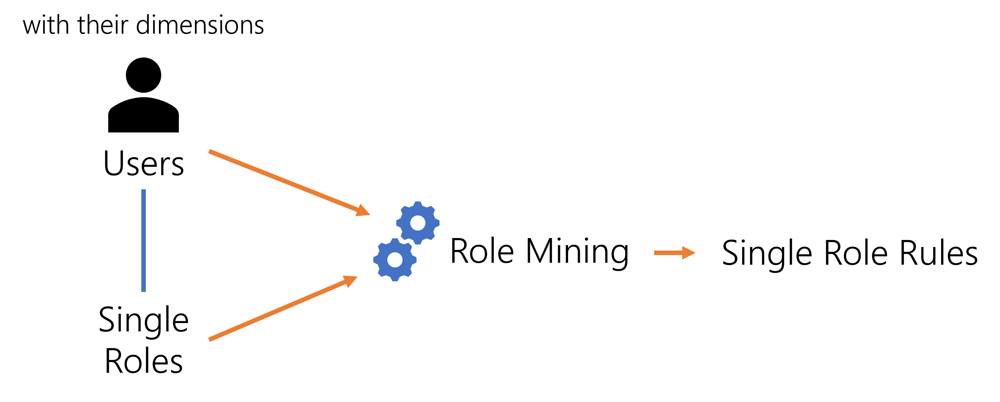
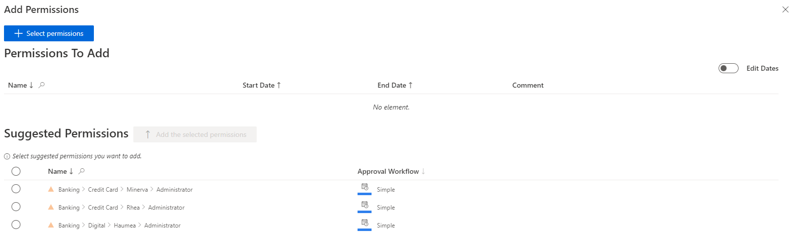
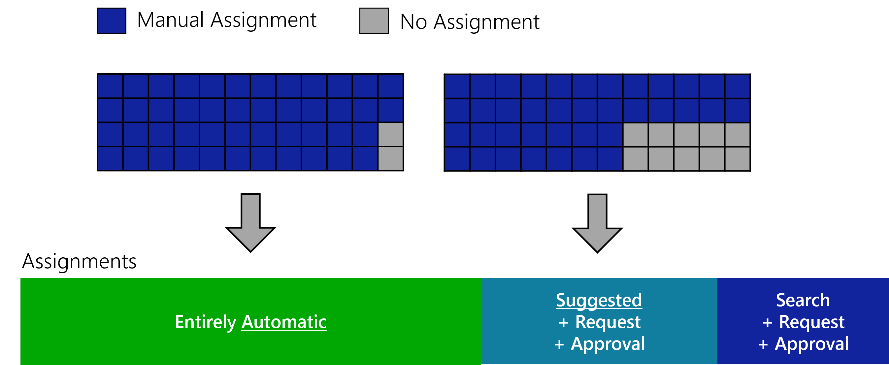
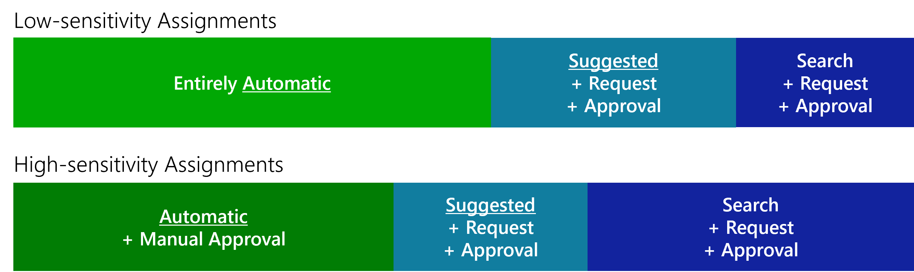
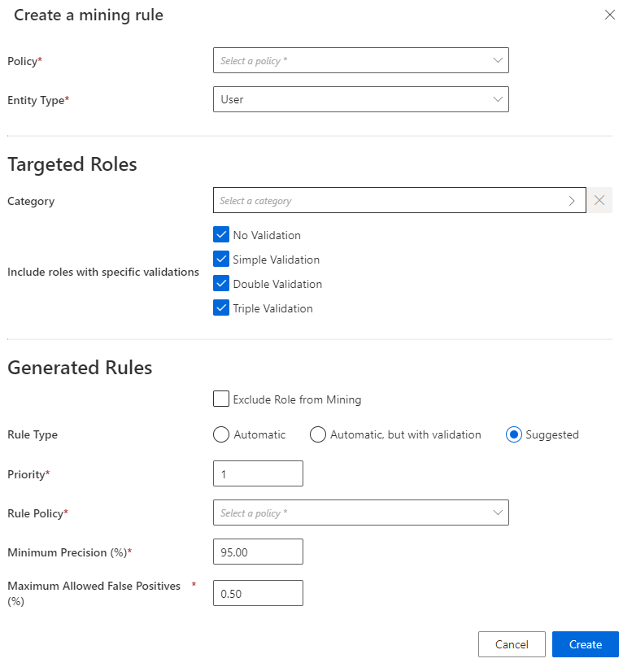
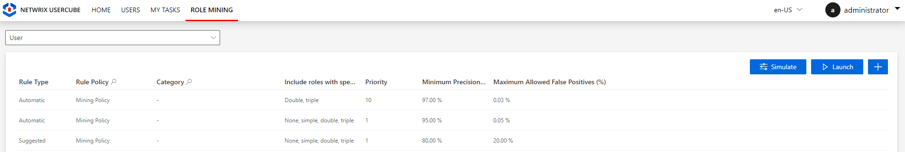

Perform Role Mining
How to use role mining to suggest role assignment rules based on existing assignments, in order to push the Automate Assignments wall further.
Overview
After the role catalog is established, the Compute Role Model Task task is able to assign single roles to users according to their attributes which are used as assignment criteria.
For example, in the AD, entitlements are given through group membership. Integrators create a navigation rule to assign each group to the users who have the corresponding single role. Then, the Compute Role Model Task is able to assign single roles to users according to their existing group membership.
In addition to group membership, the assignment of an entitlement to users could also depend on users' attributes like their location, position title, etc.
Now that users received their roles, the role mining tool can analyze these assignments and deduce Single Role Rule which will assign single roles to certain users matching given criteria.

Role mining is a Machine Learning process. It is a statistic tool used to emphasize the Single Role Rule that constitute the key criteria for existing role assignments. It detects the most probable links between identities dimensions and their roles in order to suggest the appropriate entitlement assignment rules.
For example, suppose that 80% of NETWRIX workers in Marseilles have access to an application "App". Then, role mining is most likely to recognize the working site as a relevant dimension, and suggest to create a rule that gives the "App" access to users whose site is Marseilles.
Role mining being a statistic tool based on existing entitlement assignments, it appears useless if the role model contains fewer than 2,000 role assignments. Then, start by reinforcing the Role Catalog. See the Create Roles in the Role Catalog topic for additional information.
Technical Principles
Role mining works through Mining Rule that Identity Manager applies with the Get Role Mining Task .
Entitlement differentiation with rule types
Mining rules can be configured to generate:
-
automatic rules, i.e. rules which assign roles automatically with or without a validation;
-
suggested rules, i.e. rules which don't assign roles directly, but suggest them during an entitlement request for a user.

You can generate both automatic and suggested rules for the same role, with different precision levels and different approval workflows.
Consider an organization where an unknown ratio of users have a given role. Using the precision settings, we can create a mining rule to generate automatic assignment rules when the ratio is above 95% and a second mining rule to generate suggested assignment rules when the ratio is between 75% and 95%.

You can also differentiate entitlements according to their sensitivity, for example require additional reviews following the request of a sensitive entitlement:

The automation of entitlement assignments according to sensitivity brings greater confidence in basic entitlements assignment which won't need to be certified anymore. Thus, automation lets certification campaigns focus on more sensitive entitlements.
Role mining should be performed first for automatic rules as they are stricter precision-wise. Thus, automatic rules should always have priority over suggested rules (via the Priority setting).
See more details about role mining.
Participants and Artifacts
At this point, integrators should have all the elements they need to operate.
| Input | Output |
|---|---|
| Role Catalog (required) |
Single role rules |
See the Create Roles in the Role Catalog topic for additional information.
Create a Mining Rule
Create a mining rule by proceeding as follows:
-
On the home page in the Configuration section, click on the Role Mining button.
You will see all existing mining rules.
-
Click on the addition button at the top right and fill in the fields.


-
Policy: Create a Policy in which the mining rule exists. -
Entity Type: Create an Entity Type on which the mining rule is applied, i.e. the entity type targeted by role mining's entitlement analysis. -
Category: Create a Category containing the roles targeted by role mining's analysis. -
Include roles with specific validations: includes in role mining's analysis the roles requiring zero and/or one and/or two and/or three validations. -
Exclude Role from Mining: ignores the specified roles during the mining process triggered by the next mining rules (in terms of priority). -
Rule Policy: Create a Policy in which the single role rules will be generated.Netwrix Identity Manager (formerly Usercube) recommends using a policy dedicated to role mining in order not to remove existing assignment rules.
-
Rule Type: type of the generated single role rules, which defines the type of role assignment that can be:Suggestedso that the resource type is listed among suggested permissions in the permission basket of users matching the criteria during an entitlement request, suggested assignments must be selected manually to be requested; orAutomaticso that the resource type is automatically assigned to users matching the criteria; orAutomatic but with validationso that the resource type is listed in the permission basket of new workers, these assignments can still be modified. -
Priority: priority order of the mining rule. Identity Manager applies mining rules one after the other in descending order. -
Minimum Precision: minimum authorized percentage of correct role assignments, considering both the roles that are assigned to users who should have them, and the roles that are not assigned to users who should not have them.NETWRIX recommends around 99.5%, to be lowered when working on a sensitive application and/or a large user population, and vice versa.
-
Maximum Allowed False Positives: maximum authorized percentage of false positive assignments, i.e. roles that are assigned to users who should not have them.NETWRIX recommends around 1%, to be lowered when working on a sensitive application and/or a large user population, and vice versa.
Enlarge the number of managed entitlements by tolerating errors:
Automation reduces the error rate by avoiding human mistakes. Errors can still occur such as "false positives", i.e. users receiving inappropriate entitlements, and thus creating security issues. However, experience shows that a slight error tolerance in role mining can highly benefit automation. -
-
Click on Create and see a line added on the rules page.
-
Click on Simulate to perfom role mining in a simulation. See the Perform a Simulation topic for additional information.

If you need to bypass the simulation process, clicking on Launch will perform role mining and apply its results directly. NETWRIX recommends always performing role mining in simulation.
Impact of Modifications
Assignment rules can sometimes give to users an entitlement that they had already received manually. Hence, new assignment rules can imply redundancies between the entitlements assigned manually and approved, and those calculated by a rule and assigned automatically.
Netwrix Identity Manager (formerly Usercube) recommends Remove Redundant Assignments after any assignment rule is created or updated.
Verify Role Mining
In order to verify the process, access the rule list from the home page.

Select Single Roles and check that the single role rules are created with the right parameters.